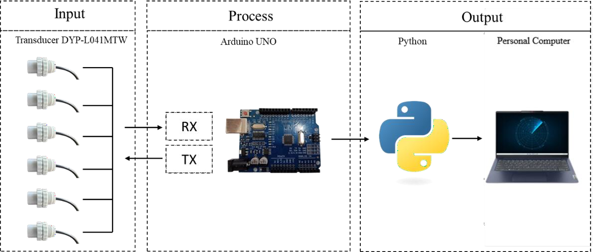
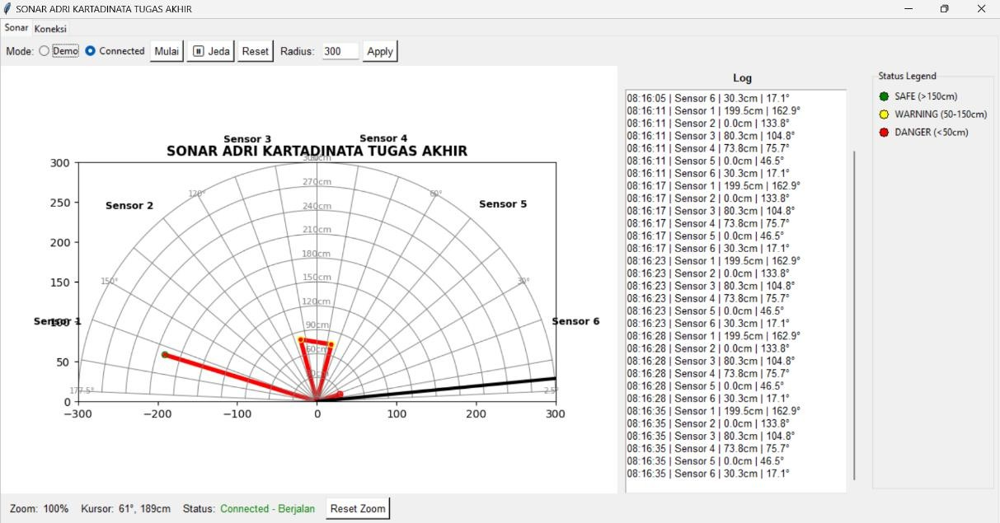
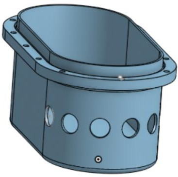
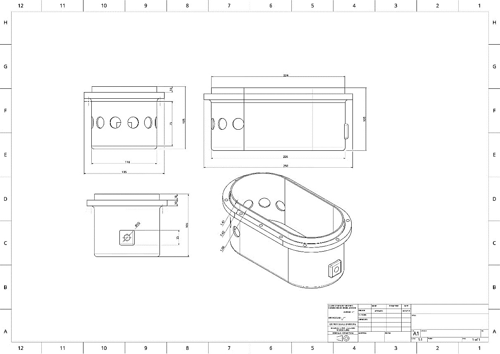
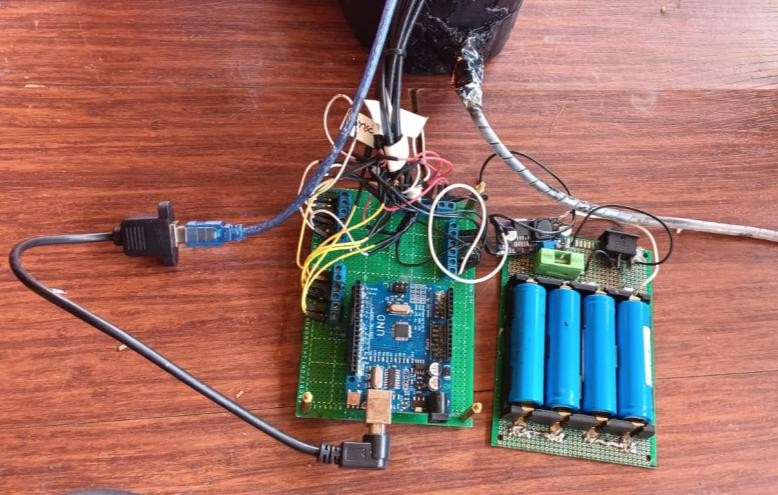
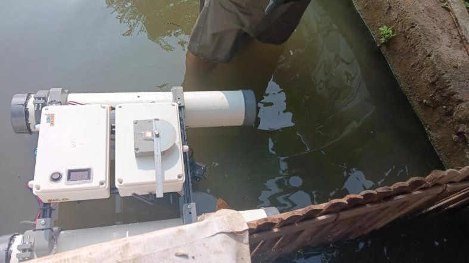

Underwater Object Detection Sonar System
Final year thesis project: designed and built a six-transducer piezoelectric sonar array with Arduino Uno-based control and real-time signal acquisition logic, paired with a Python-based real-time data visualization interface.
Project Overview
Background / Problem Statement
Underwater visibility drops sharply once suspended sediment scatters or absorbs light, so optical and infrared sensing routinely fails to give a stable spatial picture in turbid water. A prior lab setup addressed this with two DYP-L04 ultrasonic sensors mounted crosswise on a motorized rig, but motor vibration and cross-signal interference left average measurement deviations of 4–7% (7.75% on height, 4.1% on length, 6.6% on width). This thesis removes the moving parts entirely, replacing them with a static, sectoral six-sensor array to see whether a fixed piezoelectric layout can hold accuracy while widening angular coverage.
Project Objectives
Design and realize a static six-transducer DYP-L04 sonar prototype as an underwater object-mapping tool — covering mechanical housing, electrical power/signal routing and interface programming — then evaluate its real-world performance: angular detection coverage, distance accuracy under varying turbidity, and object-visualization capability, all tested in still-water (non-flowing) conditions.
Main Idea / System Concept
Six DYP-L04 piezoelectric transducers are bolted at fixed angles (17.05° to 162.95°, ≈29° apart) into a sealed ABS housing, giving 175° of non-overlapping sectoral coverage with no scanning motor. Arduino Uno triggers each sensor in turn over a shared TX line and reads its 4-byte UART reply (50 ms per sensor, 300 ms pause per full cycle), then streams distance data to a Python interface that plots every detection live on a 2D polar/Cartesian radar.
Application / Use Case
Underwater object detection and proximity sensing in low-visibility water — demonstrated as a final year thesis at Politeknik Manufaktur Bandung, with the prototype field-tested in an open sediment pond and validated against live fish and transparent-acrylic targets out to 300 cm.
Technical Details
Six piezoelectric transducers acquire underwater signal data through the Arduino Uno's real-time acquisition logic, which is streamed to a Python interface for live visualization and interpretation.
Hardware Used
- Sensors 6× DYP-L04 piezoelectric ultrasonic transducers, ±7.5° beam angle, 24 V DC, 2–300 cm range
- MCU Arduino Uno — 1 shared TX trigger line, 6 RX lines via SoftwareSerial, 1 kΩ series resistors on every data line
- Housing Custom elliptical ABS casing (250×135×105 mm), silicone O-ring seal, 6× Ø20 mm sensor ports
- Power 4×18650 Li-ion pack (14.8 V, 500 mAh) → 1 A fuse → XL6009 DC-DC boost converter → 24 V sensor rail
- Wiring Battery switch, common ground bus, USB-powered 5 V rail for the Arduino
Software Used
- Firmware Arduino IDE (C/C++) — round-robin sensor polling, 4-byte UART packet parsing, 50 ms/sensor + 300 ms cycle delay
- Interface Python (real-time data visualization) — serial ingestion at up to 115200 bps, live 2D radar rendering
- CAD SolidWorks — 3D casing modeling and mechanical drawings for fabrication
Programming Language(s) / Tools
Workflow Explanation
Mechanical housing design
Modeled a sealed elliptical ABS casing in SolidWorks with six Ø20 mm sensor ports set at fixed angles (17.05°–162.95°, ~29° apart) for 175° sectoral coverage, sealed with a silicone O-ring to keep electronics dry.
Transducer array & power design
Wired six DYP-L04 transducers to a 24 V rail (boosted from a 14.8 V 4×18650 battery pack via an XL6009 converter) and installed 1 kΩ series resistors on every TX/RX line to stabilize data pulses.
Arduino-based control
Implemented round-robin firmware on the Arduino Uno: each sensor is triggered in turn over a shared TX line, its 4-byte reply is validated and converted to distance, with 50 ms between sensors and a 300 ms pause per full six-sensor cycle to avoid signal collisions.
Real-time visualization
Built a Python GUI with Demo/Connected modes, a live polar radar (Start/Pause/Reset, adjustable radius), a colour-coded SAFE/WARNING/DANGER status legend, a timestamped sensor log panel and a serial-port configuration tab.
Testing & validation
Field-tested the assembled prototype in an open sediment pond: angular-coverage mapping, multi-angle spatial-response characterization, turbidity-deviation testing, and object detection against live fish and transparent acrylic targets.
Sensor Array, Power Chain & GUI
Four integrated domains — mechanical, electrical, control and informatics — combine into an Input → Process → Output pipeline: six static transducers feed an Arduino Uno, which streams parsed distance data to a Python radar interface.

Sensor Array Configuration
- Layout 6 sensors, sector centers at 162.95° / 133.85° / 104.75° / 75.65° / 46.55° / 17.05°
- Beam ±7.5° per sensor (15° total), non-overlapping sectoral coverage
- Coverage ~175° horizontal field, no scanning motor required
- Port height 52.5 mm from casing base to minimise sediment fouling and wall resonance
- Range 5–300 cm rated distance, tested to ~1 m water depth
Power & Signal Chain
- Battery 4×18650 Li-ion, series-wired to 14.8 V, 500 mAh (7.4 Wh)
- Boost XL6009 DC-DC converter steps 14.8 V up to the sensors' 24 V rail (~90% conversion efficiency)
- Draw ~7 mA per sensor at 24 V → ~42 mA / 1.008 W for all six
- Runtime ≈6.6 hours of continuous operation on a full charge
- Comms 1 shared TX trigger + 6 RX lines, UART, 4-byte packet per reading, resistor-buffered against reflection noise
Python Radar GUI

- Modes Demo (simulated) and Connected (live Arduino serial data)
- Radar view Polar plot from 2.5°–177.5°, adjustable radius, live sweep line, multi-dot line linking the latest reading per sensor
- Status legend SAFE (>150 cm), WARNING (50–150 cm), DANGER (<50 cm)
- Log panel Chronological record of timestamp, sensor ID, distance (cm) and angle (°)
- Connection tab Serial-port selector, baud-rate dropdown (9600 / 115200 bps), connect/disconnect toggle with auto-reconnect
- Controls Start / Pause–Resume / Reset, zoom viewer with mouse-scroll and reset-zoom
Project Documentation
The full thesis report, Arduino firmware and Python visualization code are available on request.
Project Gallery
From mechanical design through to field validation — the casing, electronics, and the prototype under test.




Results & Outcomes
Quantitative findings from four rounds of pond testing: angular coverage, multi-angle spatial response, turbidity sensitivity and object-type detection.
Measured Performance
- Coverage Effective detection arc of 10°–170° (design target ~175°)
- Precision Reading deviation of just 0.03–0.05 cm within the effective arc
- Turbidity Worst-case deviation 1.13 cm at 100 cm range under 86–87% turbidity
- Solid targets Live fish detected accurately out to 300 cm (0.97% error at 300 cm)
- Transparent targets Acrylic/mica accuracy degrades with distance — up to 9.67 cm error at 300 cm
- Blind spots Identified at 0°–5°, 65°, 95°, 125°–130°, 175° and 180° — transition zones between sensor sectors
Recommendations for Future Work
- Electrical Add higher-output transducers at 65°, 95° and 125°–130° to close the identified blind spots
- Electrical Add an analogue-output sensor variant to better resolve amplitude for transparent/low-reflectivity targets
- Software Add automatic data logging (0.1 s interval) for post-run analysis
- Software Add moving-average / median filtering to smooth readings in turbid water
- Mechanical Explore alternative transducer placements to extend coverage beyond 175°
Achievements
Successfully designed and built a working six-transducer piezoelectric sonar array with real-time signal acquisition for object detection.
Visualization Interface
Delivered an integrated Python-based interface for real-time monitoring and interpretation of sensor output.
Academic Outcome
Completed as final year thesis project (Jan – Sep 2025), contributing to graduation with a GPA of 3.28/4.00 and predicate "Sangat Memuaskan."
Foundation Built
Established hands-on embedded systems and real-time data visualization skills later applied professionally at PT Aldzama.